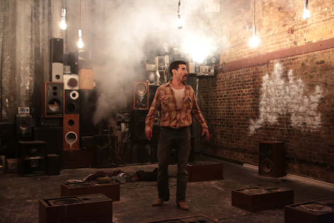
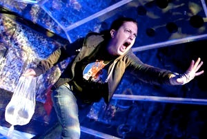

“Most Strikingly, the entire production is infused with an anxiety-inducing soundscape (by Elizabeth Rhodes), which alternates among paranormal radio music, the goose-pimply sounds of static and a dull, quickening heartbeat.” - NY Times
“Elizabeth Rhodes' sound design sets the mood, mixing noises...with musical selections ranging from a subtle piano underscoring to the loud blasting of The Who's song, “Teenage Wasteland.” - Theater Mania
As a New York based sound designer Elizabeth Rhodes has had the opportunity to collaborate with some of the most cutting edge theater companies in the city including LAByrinth, Signature Theater, and Classic Stage Company. She has designed classics such as The Winter’s Tale starring Oscar-nominee David Strathairn, and world premieres such as John Patrick Shanley’s Dirty Story and Steve Martin’s adaptation of the Underpants. Regionally she has worked at the Alley Theater in Houston, Long Wharf Theater in New Haven, and The Old Globe in San Diego. Many of her designs have been presented internationally at the Edinburgh Fringe Festival. In 2003 Entertainment Design Magazine recognized her as the “Sound Designer to Watch”, in 2007 she won Best Design in New York Musical Theater Festival’s Award’s for Excellence, nytheatre.com named her as a person of the year for her work in 2009, and most recently she received a Drama Desk Nomination for her Design on In the Heat of the Night.
Call me: 1-800-DESIGNS
Email me: sounddesigns@elizabethrhodes.net
Check me out on Facebook & Twitter!
© 2012 Elizabeth Rhodes Sound Designs. All Rights Reserved.